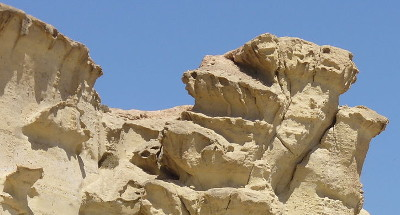

Agentes geológicos externos
La energía procedente del Sol es la responsable de:
• Las variaciones de la temperatura del aire en distintas zonas de la troposfera, que origina los vientos.
• La evaporación del agua de la hidrosfera, formando nubes que originarán precipitaciones sobre la superficie de los continentes, dando lugar a escorrentías, ríos, glaciares y aguas subterráneas.
• Los movimientos del agua del mar (olas, corrientes marinas y mareas), junto con los vientos, la rotación de la Tierra y la atracción gravitatoria de la Luna y el Sol.
El viento y el agua, en todas sus formas, desgastan las formas del relieve mediante tres procesos geológicos externos (procesos que ocurren en la superficie terrestre): erosión, transporte y sedimentación, que se detallará en el próximo apartado.
 |
|
Gradas de Bolnuevo. Acción del viento y del agua sobre la roca |
Por otro lado, la atmósfera es la responsable de un cuarto proceso geológico, la meteorización.